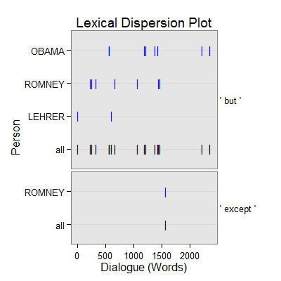

dc_revision(text.var, grouping.var, n.before = 1, tot = FALSE, n.after = n.before, ord.inds = TRUE, markup = c("<<", ">>"), name = "revision", ...)
TRUE condenses sub-units (e.g., sentences)
into turns of talk for that grouping.var.TRUE inds is ordered least to greatest.c("", "") to not mark the revision discourse
markers.termco.dc_revision - Returns returns a list of 2:
countsA termco object of revision discourse connector counts.
revisionA trans_context object of revision discourse connectors in context.
dc_revision - Extract revision discourse connectors in context.
Alemany, L. A. (2005). Representing discourse for automatic text summarization via shallow NLP techniques (Unpublished doctoral dissertation). Universitat de Barcelona, Barcelona.
http://russell.famaf.unc.edu.ar/~laura/shallowdisc4summ/discmar
out <- with(pres_debates2012[1:200, ], dc_revision(dialogue, person)) out[1]$counts person word.count revision 1 OBAMA 943 8(.85%) 2 ROMNEY 1349 8(.59%) 3 LEHRER 316 2(.63%)out[2]$revision =================================== Event 1: [lines 1-3] LEHRER: We'll talk about specifically about health care in a moment. ** LEHRER: <<But>> what do you support the voucher system, Governor? ROMNEY: What I support is no change for current retirees and near retirees to Medicare. =================================== Event 2: [lines 17-19] ROMNEY: If I don't like them, I can get rid of them and find a different insurance company. ** ROMNEY: <<But>> people make their own choice. ROMNEY: The other thing we have to do to save Medicare? =================================== Event 3: [lines 19-21] ROMNEY: The other thing we have to do to save Medicare? ** ROMNEY: We have to have the benefits high for those that are low income, <<but>> for higher income people, we're going to have to lower some of the benefits. ROMNEY: We have to make sure this program is there for the long term. =================================== Event 4: [lines 22-24] ROMNEY: That's the plan that I've put forward. ** ROMNEY: And, by the way the idea came not even from Paul Ryan or or Senator Wyden, who's the co author of the bill with with Paul Ryan in the Senate, <<but>> also it came from Bill Bill Clinton's chief of staff. ROMNEY: This is an idea that's been around a long time, which is saying, hey, let's see if we can't get competition into the Medicare world so that people can get the choice of different plans at lower cost, better quality. =================================== Event 5: [lines 38-40] LEHRER: Talk about that in a minute. ** OBAMA: <<but>> <<but>> <<but>> overall. LEHRER: OK. =================================== Event 6: [lines 46-48] OBAMA: I'm sorry. ** LEHRER: <<But>> all I want to do is go very quickly| ROMNEY: Let's get back to Medicare. =================================== Event 7: [lines 54-56] LEHRER: Wait a minute, Governor. ** ROMNEY: <<But>> my experience my experience the private sector typically is able to provide a better product at a lower cost. LEHRER: All right. =================================== Event 8: [lines 99-101] LEHRER: Well, here's a specific| ** ROMNEY: <<But>> let's let's mention let me mention the other one. ROMNEY: Let's talk| =================================== Event 9: [lines 109-111] OBAMA: You had credit agencies that were stamping these as Aone great investments when they weren't. ** OBAMA: <<But>> you also had banks making money hand over fist, churning out products that the bankers themselves didn't even understand, in order to make big profits, <<but>> knowing that it made the entire system vulnerable. OBAMA: So what did we do? =================================== Event 10: [lines 118-120] OBAMA: And, you know, I appreciate and it appears we've got some agreement that a marketplace to work has to have some regulation. ** OBAMA: <<But>> in the past, Governor Romney has said he just want to repeal Dodd Frank, roll it back. OBAMA: And so the question is: Does anybody out there think that the big problem we had is that there was too much oversight and regulation of Wall Street? =================================== Event 11: [lines 121-123] OBAMA: Because if you do, then Governor Romney is your candidate. ** OBAMA: <<But>> that's not what I believe. ROMNEY: Sorry, but that's just not that's just not the facts. =================================== Event 12: [lines 122-124] OBAMA: But that's not what I believe. ** ROMNEY: Sorry, <<but>> that's just not that's just not the facts. ROMNEY: Look, we have to have regulation on Wall Street. =================================== Event 13: [lines 125-127] ROMNEY: That's why I'd have regulation. ** ROMNEY: <<But>> I wouldn't designate five banks as too big to fail and give them a blank check. ROMNEY: That's one of the unintended consequences of Dodd Frank. =================================== Event 14: [lines 134-136] ROMNEY: It's one of the reasons for the great financial calamity we had. ** ROMNEY: And so Dodd Frank correctly says we need to have qualified mortgages, and if you give a mortgage that's not qualified, there are big penalties, <<except>> they didn't ever go on and define what a qualified mortgage was. ROMNEY: It's been two years. =================================== Event 15: [lines 178-180] OBAMA: And it wasn't just that small businesses were seeing costs skyrocket and they couldn't get affordable coverage even if they wanted to provide it to their employees. ** OBAMA: It wasn't just that this was the biggest driver of our federal deficit, our overall health care costs, <<but>> it was families who were worried about going bankrupt if they got sick, millions of families, all across the country. OBAMA: If they had a pre existing condition, they might not be able to get coverage at all. =================================== Event 16: [lines 187-189] OBAMA: You keep your own doctor. ** OBAMA: <<But>> it does say insurance companies can't jerk you around. OBAMA: They can't impose arbitrary lifetime limits.plot(out)
## Save externally use .doc or .txt ## print(out[[2]], file="revision_causality.doc")